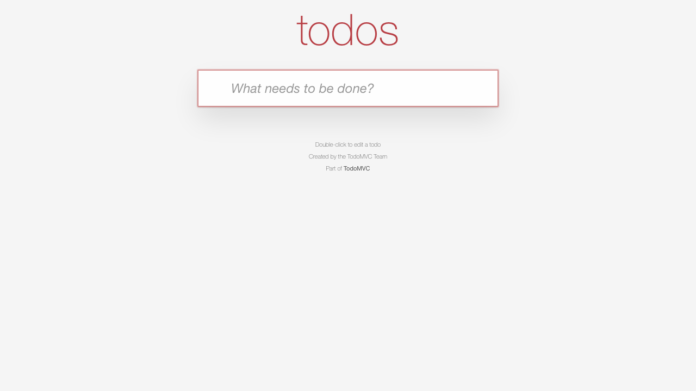

![prq]() proof request
proof requesttodomvc · 1b361f37fc5ea0d54f2d313dfb9d4e44a6670d442026-11-01T13:32:13.564Z
Entering "Buy milk" in the new-todo input and pressing Enter adds a visible todo labeled "Buy milk".
held 0 · broken 1 · needs a human 0
1 claim locked
#01715cebefore any check ranclaims from file⌄
Entering "Buy milk" in the new-todo input and pressing Enter adds a visible todo labeled "Buy milk".
The original source is shown in full. The locked claims appear below.
✗- claimedEntering "Buy milk" in the new-todo input and pressing Enter adds a visible todo labeled "Buy milk".+ observedThe todo area is visible and empty; no todo labeled "Buy milk" is shown.
- claimedEntering "Buy milk" in the new-todo input and pressing Enter adds a visible todo labeled "Buy milk".
+ observedThe todo area is visible and empty; no todo labeled "Buy milk" is shown.
c1 · browsertester e2e / independent browsersetup replayed · assertions checked live
note
Availability only: GET http://127.0.0.1:4317 returned HTTP 200 before browser checks. This does not verify the claim.
note
app.open: /
note
agent.waitFor: The page has finished its initial loading state. — The page displays the todos heading, new-todo input, and footer, with no loading indicator or placeholder.
note
app.screenshot: before-setup
note
agent.act: Enter "Buy milk" in the new-todo input and press Enter. This is setup only: complete this step once the requested actions are performed, regardless of the resulting application behavior. The following assertion will check correctness. — Setup actions were performed by replay: typed "Buy milk" and pressed Enter. Checked the current screen without repeating them; the input is empty and no todo is visible. Correctness is left to the following assertion.
assertion
check contradicted · agent.assert: Entering "Buy milk" in the new-todo input and pressing Enter adds a visible todo labeled "Buy milk". — The todo area is visible and empty; no todo labeled "Buy milk" is shown. [ASSERTION_FAILED]
note
GET http://127.0.0.1:4317/learn.json 404 Not Found


note
#root document "TodoMVC: Backbone" #n2 heading "todos" #n3 textbox "What needs to be done?" [focused] #n4 contentinfo #n5 text="Double-click to edit a todo" #n6 text="Created by the TodoMVC Team" #n7 text="Part of TodoMVC" #n8 link "TodoMVC" href="http://todomvc.com/"

note
# ✗ c1: Entering "Buy milk" in the new-todo input and pressing Enter adds a visible todo labeled "Buy milk". `tests/prq-01715ce.e2e.ts` · failed · 23.8s Ran on: browser `chromium 156.0.8078.4` · user agent `Mozilla/5.0 (Macintosh; Intel Mac OS X 10_15_7) AppleWebKit/537.36 (KHTML, like Gecko) HeadlessChrome/156.0.8078.4 Safari/537.36` **ASSERTION_FAILED** ```text The todo area is visible and empty; no todo labeled "Buy milk" is shown. ``` Look at: `tests/prq-01715ce.e2e.ts:8` ## Steps 1. ✓ `app.open` `/` (76ms) — `tests/prq-01715ce.e2e.ts:4` - ⚠ network warning: `GET /learn.json 404 Not Found` - screen: 8 nodes at `/` 2. ✓ `agent.waitFor` "The page has finished its initial loading state." (2.6s, 1 model call) — `tests/prq-01715ce.e2e.ts:5` - screen: unchanged since step 1 at `/` 3. ✓ `app.screenshot` `before-setup` (36ms) — `tests/prq-01715ce.e2e.ts:6` - [screenshot](attempt-1/screenshots/001-before-setup.png) `.pr/e2e/ef2cf079-0bc9-45cf-93f6-fd5389d2bd9b/results/prq-01715ce-c1-entering-buy-milk-in-the-new-054b66b802ff11f8/attempt-1/screenshots/001-before-setup.png` 4. ✓ `agent.act` "Enter "Buy milk" in the new-todo input and press Enter. This is setup only: complete this step once the requested actions are performed, regardless of the resulting application behavior. The following assertion will check correctness." (18.8s, 2 model calls) — `tests/prq-01715ce.e2e.ts:7` - cache: replayed 2 of 2 recorded actions, then the agent took over: the recorded end state did not show; recorded with `openai.responses/gpt-6.1-sol`; every recorded action ran, but the recorded end state did not show on /: missing checkbox "❯ Mark all as complete" and node "Mark all as complete" (+6 more); recording deleted: its replay ended in a failure or a repair, or no check confirmed it (`.e2e/cache/09f0188434efc4ca249908fb89466c03865ab191f055c92d5ea5294f7beffb59.json`) - type "Buy milk" into textbox "What needs to be done?" (11ms) - press "Enter" on textbox "What needs to be done?" (11ms) - screen: unchanged since step 2 at `/` 5. ✗ `agent.assert` "Entering "Buy milk" in the new-todo input and pressing Enter adds a visible todo labeled "Buy milk"." (2.2s, 1 model call) — **ASSERTION_FAILED** — `tests/prq-01715ce.e2e.ts:8` > The todo area is visible and empty; no todo labeled "Buy milk" is shown. - [screenshot](attempt-1/screenshots/002-assert.png) `.pr/e2e/ef2cf079-0bc9-45cf-93f6-fd5389d2bd9b/results/prq-01715ce-c1-entering-buy-milk-in-the-new-054b66b802ff11f8/attempt-1/screenshots/002-assert.png` - screen: unchanged since step 4 at `/` ## App log What the app logged, oldest first, with the step it happened in. - step 1 · ⚠ network warning: `GET /learn.json 404 Not Found` ## Screen at failure `http://127.0.0.1:4317/` · viewport 1280x720 · 8 nodes  The screen as the agent reads it, one node per line: `#id role "name" text="…" [states]`. ```text #root document "TodoMVC: Backbone" #n2 heading "todos" #n3 textbox "What needs to be done?" [focused] #n4 contentinfo #n5 text="Double-click to edit a todo" #n6 text="Created by the TodoMVC Team" #n7 text="Part of TodoMVC" #n8 link "TodoMVC" href="http://todomvc.com/" ``` ## Evidence - [screenshot](attempt-1/screenshots/003-failure.png) `.pr/e2e/ef2cf079-0bc9-45cf-93f6-fd5389d2bd9b/results/prq-01715ce-c1-entering-buy-milk-in-the-new-054b66b802ff11f8/attempt-1/screenshots/003-failure.png` - [screen](attempt-1/screen-at-failure.txt) `.pr/e2e/ef2cf079-0bc9-45cf-93f6-fd5389d2bd9b/results/prq-01715ce-c1-entering-buy-milk-in-the-new-054b66b802ff11f8/attempt-1/screen-at-failure.txt` - [screenshot](attempt-1/screenshots/001-before-setup.png) `.pr/e2e/ef2cf079-0bc9-45cf-93f6-fd5389d2bd9b/results/prq-01715ce-c1-entering-buy-milk-in-the-new-054b66b802ff11f8/attempt-1/screenshots/001-before-setup.png` <sub>e2e 0.22.0 · run `01a1974f-2281-72aa-8bf8-70c1ca128efc` · the whole run is in `report.json`</sub>
note
Checked externally running application at http://127.0.0.1:4317. Its source revision was not verified against 1b361f37fc5ea0d54f2d313dfb9d4e44a6670d44.
judge decisions gpt-6-luna · probability the claim holds 0.00